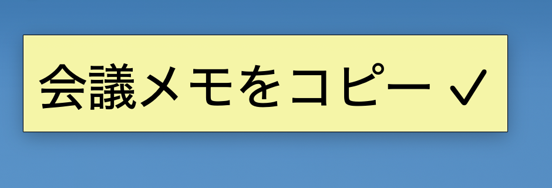
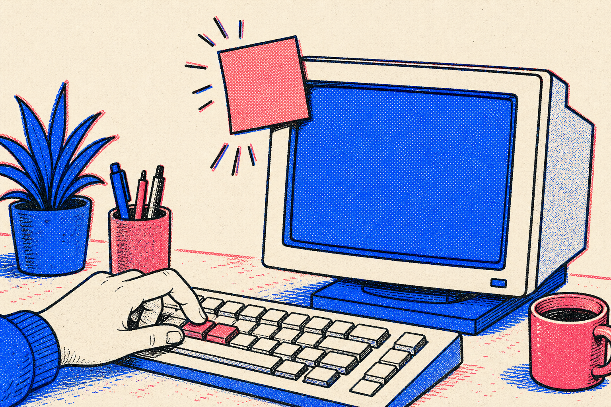
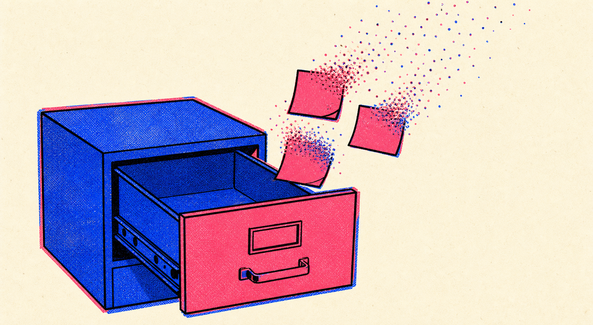
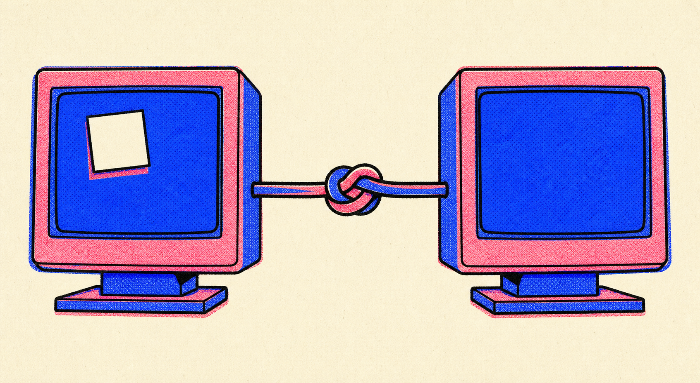
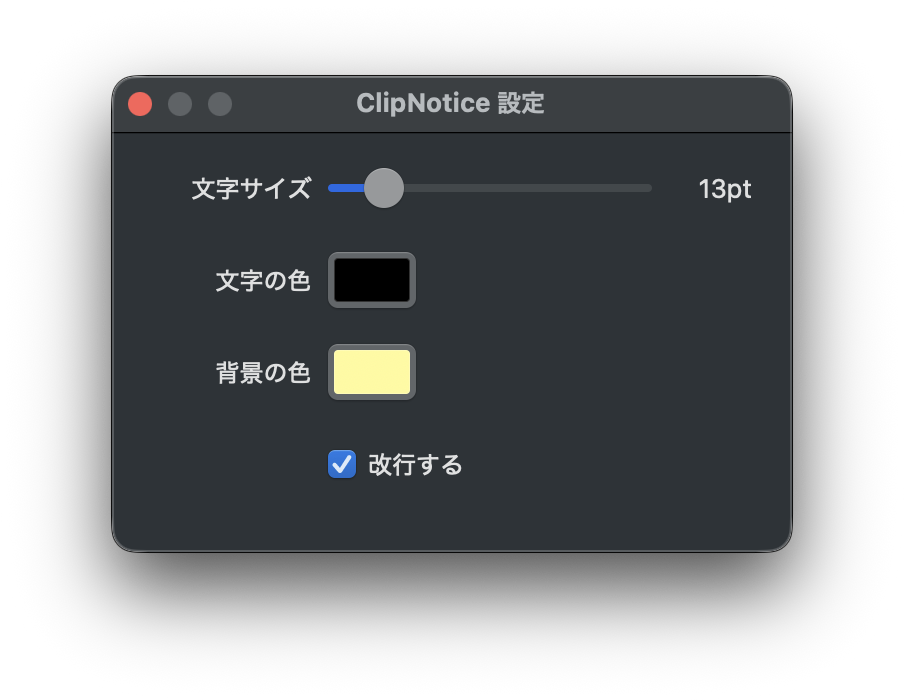

履歴は持たない。Dock もメニューバーも出さない、常駐ユーティリティ。
コピーの確認のためにペーストしてみる必要が、もうない。
macOS 13+（Homebrew はソースビルド・要 Xcode）／ Windows 10・11（EXE、.NET 同梱で追加インストール不要）

↑ これが3秒で消える。それだけ。

それだけ。
コピーを検知して、付箋を出して、消す。ClipNotice がするのはこれだけです。
0.5秒ごとにクリップボードの変化を見ています。文字列だけが対象。
コピーした中身がそのまま出ます。300文字まで。
放っておけば勝手に消えます。待てないならクリックで即消去。標準は3秒（変更は Windows 版の設定から）。
付箋の見た目と消え方を、このページ上で再現したものです。コピー → 左上に付箋 → 3秒で消える。付箋をクリックすれば即座に消えます。クリップボードの監視までは再現していません。
※ ボタンを押すと、この文字列は実際にあなたのクリップボードにもコピーされます。
ClipNotice を入れていれば、ブラウザの外の「本物」も同時に出ます。

Maccy・Clipy・Paste のようなクリップボードマネージャとは別のものです。ClipNotice は履歴を持ちません。呼び出すホットキーもありません。出て、消えるだけです。

ネットワークが詰まっているとき、コピーが相手のPCに届いていないことがあります。届いたと思ってペーストしたら空振り——PowerShell や iTerm2 でコマンドを貼っているときの、あれです。
ClipNotice なら、どちらのPC画面に付箋が出たかで「届いた／届いていない」が一目で分かります。

コピー → 付箋表示（初期位置は左上）→ 自動消去（標準3秒） クリック → 即時消去 右クリック → 設定 / Quit ClipNotice
Dock アイコンもメニューバーアイコンも出ないので、終了も設定も付箋の右クリックから行います。Windows 版では付箋をドラッグで動かせて、その位置が次回の表示に引き継がれます。
| 設定 | 内容 |
|---|---|
| 文字サイズ | 8〜48pt スライダー |
| 文字の色 | カラーピッカー（32色スウォッチ＋#RRGGBB 入力） |
| 背景の色 | カラーピッカー（デフォルト: 黄色） |
| 改行する | 長文の折り返し on / off |
設定はリアルタイムプレビュー付き。いじった瞬間に付箋の見た目が変わります。
上の4項目は mac / win 共通。このほかに 表示時間スライダー（0.5〜5秒、デフォルト3秒）・設定パネルの自動クローズ（2/4/6/8/10秒、デフォルト8秒）・付箋のドラッグ移動が Windows 版に入っています。
出典: README（設定表）／ CHANGELOG 0.3.1（Windows 追加分）
0.5秒ごとにクリップボードの変化を見て、変わっていたら付箋を出す。対象は文字列のみ、300文字まで。
| 項目 | macOS | Windows |
|---|---|---|
| 言語 | Swift 5.9 | C# / .NET 9 |
| UI | AppKit NSPanel | WinForms |
| 検知 | NSPasteboard.changeCount ポーリング | Clipboard API ポーリング |
| ポーリング間隔 | 0.5秒 | 0.5秒 |
| テキスト上限 | 300文字 | 300文字 |
| 対象 | 文字列のみ | 文字列のみ |
| OS | macOS 13+ | Windows 10/11 (64-bit) |
| 配布 | Homebrew（ソースビルド） | GitHub Releases（EXE） |
出典: ClipNotice README（リポジトリ内 Specs 表）
brew tap tobisako/clipnotice brew install clipnotice clipnotice &
Homebrew 版はソースからビルドされます。Xcode が必要です。
git clone https://github.com/tobisako/ClipNotice.git cd ClipNotice/mac bash build.sh release .build/release/clipnotice &
システム設定 → 一般 → ログイン項目 → 「＋」 で実行ファイルを追加します。ソースからビルドした場合は .build/release/clipnotice。Homebrew で入れた場合は which clipnotice で出たパスを指定してください。
clipnotice.exe をダウンロードして起動するだけ。.NET ランタイムは EXE に同梱（self-contained）なので、別途インストールは不要です。
「詳細情報」→「実行」。署名なし配布のために出る Windows の警告です。コードは オープンソースです。
git clone https://github.com/tobisako/ClipNotice.git cd ClipNotice/win dotnet publish -c Release -r win-x64 ` --self-contained true -p:PublishSingleFile=true
.NET 9 SDK が必要です。
Win+R → shell:startup → clipnotice.exe のショートカットを配置。
自前のカラーピッカー（32色スウォッチ＋hex入力）を mac / win 両方に。付箋のドラッグ移動、表示時間スライダー、設定パネルの自動クローズを Windows に追加。
Windows 対応（C# / WinForms）。GitHub Actions で EXE を自動ビルドしてリリースに添付。mac/ と win/ の monorepo 構成に。
設定パネル（文字サイズ・文字色・背景色・改行トグル）をリアルタイムプレビュー付きで追加。
初回リリース。macOS のみ。付箋表示・3秒で自動消去・クリックで消去・右クリックで Quit。Dock / メニューバーアイコンなし。